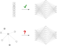
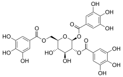
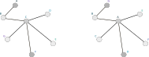
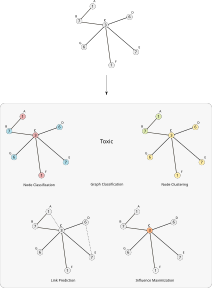
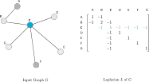
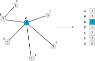
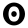

本文是 Distill 关于图神经网络的两篇论文之一。 请参阅 图神经网络：入门指南 [[gnn-intro]] ，以获得关于图与神经网络相关内容的配套解读。
许多系统和交互——社交网络、分子、组织、引用、物理模型、交易——都可以非常自然地表示为图。 我们如何对这些系统进行推理并做出预测呢？
一个想法是参考在其他领域中表现良好的工具：神经网络在各种学习任务中展现出了巨大的预测能力。 然而，神经网络传统上被用于处理固定大小且结构规则的输入（例如句子、图像和视频）。 这使得它们无法优雅地处理图结构数据。

图神经网络（GNNs）是一类可以自然地在图结构数据上运行的神经网络。 通过从底层图中提取和利用特征， GNNs 能够对这些交互中的实体做出更明智的预测， 与那些孤立考虑单个实体的模型相比。
GNNs 并不是对图结构数据建模的唯一工具： 图核[[graph-kernels]] 和随机游走方法[[node2vec,deepwalk]] 曾经是最受欢迎的方法之一。 然而如今，GNNs 已基本取代了这些技术， 因为它们在建模底层系统时具有更高的灵活性。
在本文中，我们将阐述 在图上进行计算所面临的挑战， 描述图神经网络的起源与设计， 并探讨近年来最流行的 GNN 变体。 特别是，我们会看到其中许多变体 都是由相似的构建块组成的。
首先，让我们讨论图所带来的一些复杂性。
图上计算的挑战
缺乏一致的结构
图是非常灵活的数学模型；但这也意味着它们在不同实例之间缺乏一致的结构。 考虑预测给定化学分子是否具有毒性的任务[[molecules-gnn,neural-message-passing]]：

[交互图：左图：非毒性 1,2,6-三没食子酰葡萄糖分子。——查看原图：https://distill.pub/2021/understanding-gnns]
查看几个例子后，以下问题很快就会显现：
将图表示为可计算的格式并非易事， 最终选择的表示方式通常在很大程度上取决于具体的问题。
节点顺序等变性
延续上面的观点：图中的节点通常没有内在的顺序。 这与图像形成对比，在图像中每个像素的位置是由其在图像中的绝对位置唯一确定的！

因此，我们希望算法具有节点顺序等变性： 它们不应依赖于图中节点的顺序。 如果我们以某种方式置换节点，那么我们的算法计算出的 节点表示也应该以相同的方式被置换。
可扩展性
图可能非常庞大！想想 Facebook 和 Twitter 等拥有超过十亿用户的社交网络。 处理如此大规模的数据并不容易。
幸运的是，大多数自然出现的图都是“稀疏”的： 它们的边数通常与顶点数成线性关系。 我们将看到，这使得我们能够使用巧妙的方法 高效地计算图中节点的表示。 此外，我们在这里介绍的方法与它们所处理的图的规模相比， 参数数量会显著减少。
问题设定与符号
图上可以定义许多有用的任务：

解决其中许多问题的一个常见先决步骤是节点表示学习： 学习将单个节点映射到固定大小的实值向量（称为“表示”或“嵌入”）。
在“学习 GNN 参数”一节中，我们将看到学习到的嵌入如何用于这些任务。
不同的 GNN 变体通过计算这些表示的方式来区分。 然而，一般来说，GNNs 以迭代的方式计算节点表示。 我们将使用符号 h_v^{(k)} 来表示节点 v 在第 k^{\text{th}} 次迭代后的表示。 每次迭代可以看作是标准神经网络中“一层”的等价物。
我们将图 G 定义为节点集合 V，以及连接它们的边集合 E。 节点可以具有作为输入的个体特征：我们用 x_v 表示节点 v \in V 的个体特征。 例如，彩色图像中一个像素的“节点特征” 就是该像素位置的红、绿、蓝通道（RGB）值。
为便于阐述，我们假设 G 是无向图，且所有节点类型相同。 [1] 我们在这里看到的大部分思想 也适用于其他类型的图： 我们将在“不同类型的图”一节中讨论这一点。
有时我们需要用矩阵 M 来表示图的某个属性， 其中每一行 M_v 表示对应于特定顶点 v 的属性。
将卷积扩展到图上
卷积神经网络已被证明在从图像中提取特征方面非常强大。 然而，图像本身可以被视为具有非常规则的网格状结构的图， 其中单个像素是节点，每个像素的 RGB 通道值作为节点特征。
一个自然的想法便是将卷积推广到任意图上。然而，请回想 上一节中列出的挑战：特别是，普通卷积不具有节点顺序不变性， 因为它们依赖于像素的绝对位置。 最初并不清楚如何将网格上的卷积推广到一般图上的卷积， 因为图中每个节点的邻域结构都不相同。 [2]
[交互图：CNN 中的卷积本质上是局部的。 在中心像素处参与卷积的邻居以灰色高亮显示。——查看原图：https://distill.pub/2021/understanding-gnns]
我们首先介绍在节点邻域上构造多项式滤波器的思想， 类似于 CNN 如何在相邻像素上计算局部滤波器。 然后，我们将看到最近的方法如何使用更强大的机制来扩展这一思想。 最后，我们将讨论 可以使用“全局”图级信息来计算节点表示的替代方法。
图上的多项式滤波器
图拉普拉斯矩阵
给定一个图 G，我们为其 n 个节点 G 固定一个任意的顺序。 我们用 A 表示 G 的 0-1 邻接矩阵，然后可以构造 G 的对角度矩阵 D 如下：
[交互图：节点 v 的度是连接到它的边的数量。——查看原图：https://distill.pub/2021/understanding-gnns]v
其中 A_{vu} 表示矩阵 A 中对应于行 v 和列 u 的元素。 我们在本节中将始终使用这一记号。
然后，图拉普拉斯矩阵 L 是定义为以下的 n \times n 阶方阵： L = D - A.

图拉普拉斯矩阵得名于它是微积分中 拉普拉斯算子 的离散模拟。
虽然它与邻接矩阵 A 精确编码了相同的信息 [3]， 但图拉普拉斯矩阵本身具有许多有趣的性质。 [4] 我们将在后续小节中看到其中一些性质， 但这里建议读者参考 这篇教程 来更深入地了解图拉普拉斯矩阵。
拉普拉斯矩阵的多项式
现在我们已经理解了图拉普拉斯矩阵是什么， 我们可以构建以下形式的多项式[[chebnet]]：
这种形式的多项式也可以由其系数向量 w = [w_0, \ldots, w_d] 来表示。 请注意，对于每个 w，p_w(L) 都是一个 n \times n 阶矩阵，与 L 一样。
这些多项式可以看作是 CNN 中“滤波器”的等价物， 而系数 w 则对应于“滤波器”的权重。
为便于阐述，我们重点讨论节点具有一维特征的情况： 每个 v \in V 对应的 x_v 只是一个实数。 当每个 x_v 是更高维向量时，同样的思想也成立。
使用前面选定的节点顺序， 我们可以将所有节点的特征 x_v 堆叠起来得到一个向量 x \in \mathbb{R}^n。

一旦我们构造了特征向量 x， 我们就可以定义它与多项式滤波器 p_w 的卷积为：
为了理解系数 w 如何影响卷积， 我们从“最简单”的多项式开始： 当 w_0 = 1 且所有其他系数均为 0 时。 在这种情况下，x’ 就是 x：
现在，如果我们提高阶数，考虑 w_1 = 1 且所有其他系数均为 0 的情况。 那么 x’ 就是 Lx，因此：
我们看到，每个节点 v 的特征 与其直接邻居 u \in \mathcal{N}(v) 的特征进行了聚合。 [5]
此时，一个自然的问题是： 多项式的阶数 d 如何影响卷积的行为？ 事实上，这并不难证明： [6]
这意味着，当我们用 p_w(L) 阶为 d 的多项式对 x 进行卷积得到 x’ 时：
实际上，节点 v 处的卷积只发生在距离不超过 d 跳的节点 u 上。 因此，这些多项式滤波器是局部化的。其局部化程度完全由 d 决定。
为了帮助你更好地理解这些“基于多项式”的卷积，我们制作了下面的可视化。 改变多项式系数和输入网格 x，观察卷积结果 x’ 如何变化。 箭头下方的网格显示了在 x 中高亮像素处应用的等价卷积核， 以得到 x’ 中的结果像素。 该核对应于 p_w(L) 中高亮像素所在的那一行。 请注意，即使在调整位置后， 该核对于不同像素也是不同的，这取决于它们在网格中的位置。
[交互可视化——查看原图：https://distill.pub/2021/understanding-gnns]
[交互可视化——查看原图：https://distill.pub/2021/understanding-gnns]
[交互可视化——查看原图：https://distill.pub/2021/understanding-gnns]
[交互可视化——查看原图：https://distill.pub/2021/understanding-gnns]
[交互可视化——查看原图：https://distill.pub/2021/understanding-gnns]
[交互可视化——查看原图：https://distill.pub/2021/understanding-gnns]
[交互可视化——查看原图：https://distill.pub/2021/understanding-gnns]
[交互可视化——查看原图：https://distill.pub/2021/understanding-gnns]
[交互可视化——查看原图：https://distill.pub/2021/understanding-gnns]
[交互可视化——查看原图：https://distill.pub/2021/understanding-gnns]
[交互图：将鼠标悬停在输入网格（左侧，表示 x）的某个像素上以高亮显示它， 并查看箭头下方该像素对应的等价卷积核。 卷积结果 x’ 显示在右侧： 请注意，不同像素处会应用不同的卷积核， 这取决于它们的位置。在输入网格上点击可在 0（白色）和 1（蓝色）之间切换像素值。 按“Randomize Grid”随机化输入网格。按“Reset Grid”将所有像素重置为 0。 使用底部的滑块更改系数 w。 按“Reset Coefficients”将所有系数 w 重置为 0。——查看原图：https://distill.pub/2021/understanding-gnns]
ChebNet
ChebNet
[[chebnet]]
通过考察以下形式的多项式滤波器，进一步完善了这一思想：
其中
T_i
是第一类
i
切比雪夫多项式
，而
\tilde{L}
是使用
L
的最大特征值定义的归一化拉普拉斯矩阵[7]
这些选择背后的动机是什么？
多项式滤波器具有节点顺序等变性
我们在这里考虑的多项式滤波器实际上与节点的顺序无关。 当多项式 p_w 的阶数为 1 时这一点特别容易看出： 此时每个节点的特征与其邻居特征之和进行聚合。 显然，这个求和不依赖于邻居的顺序。 对于更高阶的多项式也可以给出类似的证明： L 的幂次中的元素对节点的顺序是等变的。
感兴趣读者的细节
如上所述，让我们假设对图的 n 个节点有一个任意的节点顺序。 任何其他节点顺序都可以看作是这个原始顺序的置换。 我们可以用 置换矩阵 P 来表示任何置换。 P 始终是一个正交的 0-1 矩阵：
然后，我们称函数 f 是节点顺序等变的，当且仅当对所有置换 P 都有：
当使用置换 P 切换到新的节点顺序时， 下列量按以下方式变换：
因此，对于多项式滤波器 f(x) = p_w(L) \ x 的情况，我们可以看到：
如上所述。
嵌入计算
现在我们来描述如何通过将 ChebNet（或任何多项式滤波器）层 一层接一层地堆叠，并加入非线性激活， 来构建图神经网络，就像标准 CNN 一样。 特别地，如果我们有 K 个不同的多项式滤波器层， 其中第 k^{\text{th}} 层的可学习权重为 w^{(k)}， 则会执行以下计算：
[交互可视化——查看原图：https://distill.pub/2021/understanding-gnns]
[交互可视化——查看原图：https://distill.pub/2021/understanding-gnns]
请注意，这些网络 在不同节点之间复用相同的滤波器权重， 精确模拟了卷积神经网络（CNN）中 在网格上复用卷积滤波器权重的机制。
现代图神经网络
ChebNet 是在图上学习局部滤波器的突破性工作， 它激励了许多人从不同角度思考图卷积。
我们回到卷积的结果
x
与多项式核
p_w(L) = L
进行卷积， 聚焦于特定顶点
v
正如我们之前指出的，这是一个 1 跳的局部卷积。 但更重要的是，我们可以将这个卷积看作由两个步骤产生：
关键思想： 如果我们考虑超出多项式滤波器所能实现的 不同类型的“聚合”和“组合”步骤，会怎么样？
通过确保聚合操作具有节点顺序等变性， 整体卷积也就具有节点顺序等变性。
这些卷积可以看作是相邻节点之间的“消息传递”： 每一步之后，每个节点都会从其邻居那里接收一些“信息”。
通过迭代重复 1 跳局部卷积 K 次（即反复“传递消息”）， 卷积的感受野最终将包含距离最多 K 跳的所有节点。
嵌入计算
消息传递构成了当今许多 GNN 架构的基石。 我们在下面深入介绍其中最流行的一些：
思考
一个有趣的点是评估不同的聚合函数：有些是否比其他更好？ [[gin]] 证明聚合函数确实可以在唯一保留节点邻域特征的能力上进行比较； 我们建议有兴趣的读者去看那里的详细理论分析。
这里，我们讨论的是仅在节点上进行计算的 GNN。 最近的 GNN 模型 如消息传递神经网络[[neural-message-passing]] 和图网络[[graphnets]] 也会在边上进行计算； 它们同时计算边嵌入和节点嵌入。 这是一个更加通用的框架—— 但本节中的“消息传递”思想同样适用。
交互式图神经网络
下面是在小型图上对这些 GNN 模型的交互式可视化。 为清晰起见，这里的节点特征只是实数，显示在每个节点旁边的方块内， 但当节点特征是向量时，方程同样成立。
[交互图：使用顶部的选项卡选择 GNN 模型。点击一个节点以查看该节点在下一次迭代时的更新方程。 使用左侧的滑块更改当前迭代的权重，并观察更新方程如何变化。——查看原图：https://distill.pub/2021/understanding-gnns]
在实践中，上面的每次迭代通常被视为一个单独的“神经网络层”。 许多流行的图神经网络库都遵循这一理念， [8] 允许在同一模型中组合不同类型的图卷积。
从局部卷积到全局卷积
我们目前看到的方法执行的是“局部”卷积： 每个节点的特征都使用其局部邻居特征的函数进行更新。
虽然执行足够多次的消息传递最终会确保 图中所有节点的信息都被传递， 但人们可能会想是否存在更直接的方式来进行“全局”卷积。
答案是肯定的；我们现在要介绍的方法实际上最早由[[spectral-networks]] 在神经网络的背景下提出， 远早于我们上面介绍的任何 GNN 模型。
谱卷积
如前所述，我们将重点放在节点具有一维特征的情况。 选择一个任意的节点顺序后，我们可以将所有节点特征堆叠起来， 得到一个“特征向量” x \in \mathbb{R}^n。
关键思想： 给定特征向量 x， 拉普拉斯矩阵 L 允许我们量化 x 相对于 G 的平滑程度。
如何量化？
在对 x 进行归一化使得 \sum_{i = 1}^n x_i^2 = 1 之后， 如果我们考察以下与 L 相关的量： [9]
我们立即可以看出，为 G 中相邻节点赋予相似值的特征向量 x （即平滑的向量）会具有较小的 R_L(x) 值。
L 是一个实对称矩阵，这意味着它具有所有实特征值 \lambda_1 \leq \ldots \leq \lambda_{n}。 [10] 此外，对应的特征向量 u_1, \ldots, u_{n} 可以取为标准正交的：
事实证明，L 的这些特征向量随着 R_L 的增大逐渐变得不那么平滑： [11]
L 的特征值集合被称为其“谱”，因此得名！ 我们将 L 的“谱”分解记为：
其中 \Lambda 是排序后的特征值构成的对角矩阵， U 表示按特征值递增顺序排列的特征向量矩阵：
特征向量之间的正交性条件使得 U^T U = I 等于单位矩阵。 由于这些 n 个特征向量构成了 \mathbb{R}^n 的基， 任何特征向量 x 都可以表示为这些特征向量的线性组合：
其中 \hat{x} 是系数向量 [x_0, \ldots x_n]。 我们称 \hat{x} 为特征向量 x 的谱表示。 正交性条件允许我们写出：
这对方程允许我们在 任意向量 x \in \mathbb{R}^n 的“自然”表示 x 和“谱”表示 \hat{x} 之间相互转换。
自然图像的谱表示
如前所述，我们可以将任何图像视为一个网格图，其中每个像素是一个节点， 通过边与相邻像素相连。 因此，一个像素可以有 3, 5, 或 8 个邻居，这取决于它在图像网格中的位置。 每个像素都有一个值作为图像的一部分。如果图像是灰度的，每个值将是一个实数， 表示该像素的灰度深浅。如果图像是彩色的，每个值将是一个 3 维向量， 表示红、绿、蓝（RGB）通道的值。 [12]
这种构造允许我们计算图拉普拉斯矩阵和特征向量矩阵 U。 给定一幅图像，我们就可以研究其谱表示是什么样子。
为了阐明谱表示实际编码了什么， 我们对图像的每个通道独立进行以下实验：
最后，我们将得到的通道重新堆叠起来，得到一幅图像。 我们现在可以看到结果图像如何随着 m 的选择而变化。 请注意，当 m = n 时，结果图像与原始图像完全相同， 因为我们可以精确重建每个通道。
[交互可视化——查看原图：https://distill.pub/2021/understanding-gnns]
[交互可视化——查看原图：https://distill.pub/2021/understanding-gnns]
[交互可视化——查看原图：https://distill.pub/2021/understanding-gnns]
[交互可视化——查看原图：https://distill.pub/2021/understanding-gnns]
[交互可视化——查看原图：https://distill.pub/2021/understanding-gnns]
[交互可视化——查看原图：https://distill.pub/2021/understanding-gnns]
[交互图：使用顶部的单选按钮选择四张样本图像之一。 这些图像均来自 ImageNet[[imagenet]] 数据集，并被下采样为 50 像素宽、40 像素高。 由于每张图像有 n = 50 \times 40 = 2000 个像素，因此有 2000 个拉普拉斯特征向量。 使用底部的滑块更改要保留的谱分量数量，注意 随着分量数量减少，图像会逐渐变得模糊。——查看原图：https://distill.pub/2021/understanding-gnns]
随着 m 减小，我们看到输出图像 x_m 变得越来越模糊。 如果我们将 m 减小到 1，输出图像 x_m 会变成单一颜色。 我们看到并不需要保留全部 n 个分量； 我们可以用少得多的分量保留图像中的大量信息。 我们可以将此与图像的傅里叶分解联系起来： 使用的特征向量越多，我们就能在网格上表示越高频的信息。
为了补充上面的可视化， 我们还在下面一个较小的 8 \times 8 网格上可视化了前几个特征向量。 我们改变谱表示中前 10 个（共 64 个）特征向量的系数， 并观察结果图像如何变化：
[交互可视化——查看原图：https://distill.pub/2021/understanding-gnns]
[交互可视化——查看原图：https://distill.pub/2021/understanding-gnns]
[交互可视化——查看原图：https://distill.pub/2021/understanding-gnns]
[交互可视化——查看原图：https://distill.pub/2021/understanding-gnns]
[交互可视化——查看原图：https://distill.pub/2021/understanding-gnns]
[交互可视化——查看原图：https://distill.pub/2021/understanding-gnns]
[交互可视化——查看原图：https://distill.pub/2021/understanding-gnns]
[交互图：移动滑块以更改谱表示 \hat{x}（右侧）， 并观察图像（左侧）上的 x 本身如何变化。 请注意前几个特征向量比后面的要“平滑”得多， 以及仅用 10 个特征向量就能创造出的许多图案。——查看原图：https://distill.pub/2021/understanding-gnns]
这些可视化应该能让你相信，前几个特征向量确实是平滑的， 而随着我们考虑后面的特征向量，平滑度相应降低。
对于任何图像 x，我们可以认为 谱表示 \hat{x} 的前几个分量 捕捉的是“全局”的图像范围趋势，即低频分量， 而后面的分量则捕捉“局部”细节，即高频分量。
嵌入计算
现在我们有了理解谱卷积的背景知识， 以及如何用它们来计算节点的嵌入/特征表示。
如前所述，我们下面描述的模型有 K 层： 每一层 k 都有可学习的参数 \hat{w}^{(k)}， 称为“滤波器权重”。 这些权重将与节点特征的谱表示进行卷积。 因此，每一层所需的权重数量等于 m，即 用于计算谱表示的特征向量数量。 我们在前一节中已经表明，可以取 m \ll n 而不会丢失大量信息。
因此，在谱域中进行卷积能够使用比直接在自然域中卷积少得多的参数。 此外，由于拉普拉斯特征向量在图上的平滑性， 使用谱表示会自动引入一个归纳偏置， 使得相邻节点倾向于获得相似的表示。
暂时假设节点特征是一维的， 每一层的输出是一个节点表示向量 h^{(k)}， 其中每个节点的表示对应于该向量的一行。
我们为 G 中的节点固定一个顺序。这给了我们邻接矩阵 A 和图拉普拉斯矩阵 L， 从而可以计算 U_m。 最后，我们可以描述各层依次执行的计算：
上述方法也很容易推广到每个 h^{(k)} \in \mathbb{R}^{d_k} 是向量的情况： 细节见[[spectral-networks]]。
结合前一节的洞见，我们看到图的谱域卷积 可以看作是图像频域卷积的推广。
谱卷积具有节点顺序等变性
我们可以使用与拉普拉斯多项式滤波器类似的方法证明谱卷积是节点顺序等变的。
感兴趣读者的细节
与我们之前的证明一样， 先固定一个任意的节点顺序。 然后，任何其他节点顺序都可以用该原始顺序的置换来表示。 我们可以将这个置换与其置换矩阵 P 关联起来。 在这个新的节点顺序下， 下列量按以下方式变换：
这意味着，在嵌入计算中：
因此，由于 \sigma 是逐元素应用的：
如所需。 此外，我们看到谱量 \hat{x}, \hat{w} 和 \hat{g} 不受节点置换的影响。 [13]
谱卷积的理论在数学上有着坚实的基础； 然而，我们必须指出它存在一些关键缺点：
虽然由于上述原因，谱卷积在很大程度上已被“局部”卷积所取代， 但理解其背后的思想仍然具有重要价值。 事实上，最近提出的一个名为 Directional Graph Networks 的 GNN 模型 [[directional-gnns]] 就大量使用了拉普拉斯特征向量 及其数学性质。
通过图嵌入实现全局传播
一种更简单地融入图级信息的方法 是通过汇聚节点 （以及可能的边）嵌入来计算整个图的嵌入， 然后使用图嵌入来更新节点嵌入， 遵循类似于我们在这里介绍的迭代方案。 这是 Graph Networks[[graphnets]] 所采用的方法。 我们将在“池化”一节中简要讨论如何构造图级嵌入。 然而，这种方法往往忽略了谱卷积能够捕捉的 图的底层拓扑结构。
学习 GNN 参数
我们在这里描述的所有嵌入计算，无论是谱方法还是空间方法，都是完全可微的。 这使得 GNNs 可以像标准神经网络一样以端到端的方式进行训练， 只要定义一个合适的损失函数 \mathcal{L} 即可：
自然语言处理模型（如 ELMo[[elmo]] 和 BERT[[bert]]） 的预训练所取得的广泛成功， 激发了人们对 GNN 类似技术的兴趣 [[strategies-pre-training,m3s,when-does-self-help,self-supervised-graphs-insights]]。 这些论文的核心思想是训练 GNN 来预测 局部（例如节点度、聚类系数、被掩盖的节点属性） 和/或全局图属性（例如成对距离、被掩盖的全局属性）。
另一种自监督技术是强制相邻节点获得相似的嵌入， 模仿 node2vec[[node2vec]] 和 DeepWalk[[deepwalk]] 等随机游走方法：
其中 N_R(v) 是从 v 出发进行随机游走所访问节点的多重集。 对于大型图，计算对所有节点的求和可能代价高昂， 此时 Noise Contrastive Estimation[[nce,nce-embeddings]] 等技术特别有用。
总结与进一步阅读
虽然我们已经在本文中介绍了许多技术和思想， 但图神经网络这一领域极其广阔。 我们不得不将讨论限制在整个文献的一个小子集上， 但仍传达了 GNN 背后的关键思想和设计原则。 我们建议有兴趣的读者参考 [[gnn-survey,gnn-review]] 以获得更全面的综述。
最后，我们给出一些读者可能感兴趣的其他概念的指针和参考文献：
GNN 的实践应用
事实证明，适应图的不同结构往往难以高效实现， 但我们仍然可以使用稀疏矩阵-向量乘积来表示许多 GNN 更新方程 （因为在大多数现实世界的图数据集上，邻接矩阵通常是稀疏的）。 例如，这里讨论的 GCN 变体可以表示为：
以这种方式重构更新方程，使得 GNN 可以在 GPU 等加速器上 实现高效的向量化计算。
标准神经网络的正则化技术， 如 Dropout[[dropout]]， 可以直接应用于参数 （例如，将上面 W^{(k)} 的整行置零）。 然而，也存在图特定的技术，例如 DropEdge[[dropedge]]， 它会随机从图中删除整条边， 这也能提升许多 GNN 模型的性能。
不同类型的图
这里我们重点讨论了无向图，以避免引入过多不必要的细节。 然而，对于以下类型存在一些简单的空间卷积变体：
确实存在更复杂的技术可以利用这些图的不同结构： 更多讨论请参阅[[gnn-survey,gnn-review]]。
池化
本文讨论了 GNN 如何计算有用的节点表示。 但如果我们想要为图级任务计算图的表示（例如预测分子的毒性），该怎么办？
一个简单的解决方案是直接聚合最终的节点嵌入，并将其通过另一个神经网络 \text{PREDICT}_G：
然而，存在更强大的“池化”节点表示的技术：
补充材料
复现实验
“自然图像的谱表示”一节中的实验 可以使用以下 Colab 笔记本复现： 自然图像的谱表示。
重现可视化

为了帮助创建未来的交互式文章， 我们为本文中的每个交互可视化创建了 ObservableHQ 笔记本：